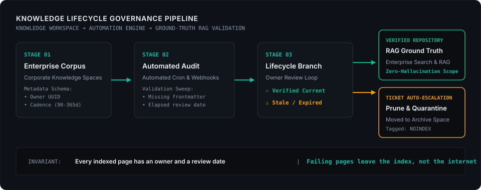

Enterprise Knowledge Lifecycle Governance
Automated governance engine enforcing documentation contracts, ownership schemas, SLA review cadences, and stale page quarantine to ground enterprise AI in certified truth.
As enterprise AI assistants (Atlassian Rovo) were deployed, over 40% of indexed documentation was unowned or outdated, leading to conflicting operational directives and hallucinated procedures during onboarding and incident triage.
Architected an automated validation pipeline via Workato and Confluence REST APIs: enforced mandatory frontmatter schemas (Owner UUID, Cadence TTL, Domain classification). Built automated cron sweeps generating SLA-tracked review tickets in Jira. Stale or unresponsive pages are automatically quarantined to an unindexed archive space tagged NOINDEX.
Transformed a decaying wiki into a living, certified knowledge contract. Search engines and RAG retrieval pipelines now query a clean corpus, eliminating AI hallucinations at the source.
